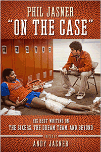

<HTML><head>
<meta name='robots' content='noindex,nofollow' /><script> (function(i,s,o,g,r,a,m){i['GoogleAnalyticsObject']=r;i[r]=i[r]||function(){  (i[r].q=i[r].q||[]).push(arguments)},i[r].l=1*new Date();a=s.createElement(o),  m=s.getElementsByTagName(o)[0];a.async=1;a.src=g;m.parentNode.insertBefore(a,m)   })(window,document,'script','//www.google-analytics.com/analytics.js','ga');   ga('create', 'UA-43183130-1', 'temple.edu');   ga('send', 'pageview'); </script><title>Edited by Andy Jasner: Phil Jasner &#147;On the Case&#148; - Print</TITLE><link rel="stylesheet" href="../general.css" type="text/css"><SCRIPT LANGUAGE = JAVASCRIPT></SCRIPT></HEAD><BODY LINK="#3152A5" VLINK="#3152A5" ALINK=Gray BGCOLOR=White><CENTER><P CLASS=intro><br>Three decades of reporting by renowned Philadelphia Hall of Fame sportswriter Phil Jasner<br><br></P></CENTER><br>&nbsp;<!--none//--><Table width="100%" border=0 cellspacing=5><tr><td width="175" align="center"></td><td><h1 class = "booktitle">Phil Jasner &#147;On the Case&#148;</h1> <h1 class = "subtitle">His Best Writing on the Sixers, the Dream Team, and Beyond</h1><h3 class="author">Edited by Andy Jasner </h3><p class="info"><p class="info">cloth EAN:  978-1-4399-1494-6 (ISBN:1-4399-1494-X)</br>$25.00, Oct 17, <font color=#990033>Available</font><br><p class="info"><p class="info">264 pp, 6 x 9, 19 halftones</p></td></tr></table></P></td></tr></table><BR>


<BLOCKQUOTE>
<p><i>"While the rain of information poured on the mob of reporters, Phil would also work between the rain drops, remaining long after everyone in the locker room was gone. There were the phone calls after midnight, asking questions&#8230;
always asking questions.  And when it came time to dispense the information, there was the angle&#8212;that unique angle that made each and every story special. His style was reminiscent of one of his role models, the late Philadelphia columnist Stan Hochman&#8212;observing the grit and grind of city sports from street level, getting the humanity of it all</i>. Phil Jasner &#8216;On the Case&#8217; <i>is the best&#8230;
of Phil's best.</i>"<br/>&#8212;<b>Marc Zumoff</b>, Philadelphia 76ers TV voice, Comcast SportsNet Philadelphia<br>	
</BLOCKQUOTE>

<P><p>Allen Iverson loved Philadelphia <i>Daily News </i>76ers beat reporter Phil Jasner, calling him &#147;the best&#148; in the world of sports journalism. From 1981 until his death in 2010, Jasner was always &#147;on the case,&#148; going to great lengths to track athletes down for a quote or a story. He was most known for his fair coverage of the team's famous players, including World B. Free and Bobby Jones, Julius Erving and Moses Malone, Charles Barkley, and, of course, Iverson. His tremendous output was beloved by players and fans alike, earning him many honors, including inductions into six Halls of Fame.<br/><br/> <i>Phil Jasner &#147;On the Case&#148; </i>collects the best of Jasner's writing throughout his illustrious career. Jasner wrote about baseball, the Eagles, and the Philadelphia Atoms' soccer with the same insight and aplomb he showed in his coverage of Philadelphia's Big 5 College Basketball, the 76ers' championship season in 1983, and the Dream Team. Lovingly assembled&#8212;each chapter is introduced by some of the most prominent figures Jasner covered, from Vince Papale, Doug Collins, and Billy Cunningham to Iverson and Barkley&#8212;this collection recounts a distinguished sportswriter's remarkable career.<br>

<P CLASS="top"><A HREF="#top">BACK TO TOP</A></P></p>
<P></P><P></b></p>

<P><h2  class="inpageheading"><A NAME="excerpt"></a>Excerpt</h2><p>
<A HREF="http://www.temple.edu/tempress/chapters_2400/2456_ch1.pdf">
Read an excerpt from Chapter 1 (pdf).</A><br>

<P CLASS="top"><A HREF="#top">BACK TO TOP</A></P></P><P></b></p><p></p>

<P><h2  class="inpageheading"><A NAME="reviews"></a>Reviews</h2>

<p><i>"The joy of Phil's work across five decades of newspapering comes alive again in</i> Phil Jasner &#8216;On the Case.&#8217; <i>As I read or re-read the stories my colleague and friend crafted so passionately, I could hear his enthusiasm for the people and games he covered. I could see the work and the legwork, making that extra call, asking one more question. And I could smile at the way Phil always balanced the demands of his editors and duty to his readers with the relationships he built with players and coaches that earned him his unrivaled access. Andy, in this tribute to his dad, shows clearly why we all considered Phil to be the &#8216;beat writer's beat writer.&#8217; And how he never forgot to have fun.</i>"<br/>&#8212;<b>Steve Aschburner</b>, Senior writer, NBA.com<br>

<P CLASS="top"><A HREF="#top">BACK TO TOP</A></P></b></p>

<p></p>

<p><h2 class="inpageheading"><A NAME="contents"></a>
Contents</h2>
<P><span style="font-family: 'Verdana';font-size: 13px;" >
Foreword by Andy Jasner <br/><br/></span><span style="font-family: 'Verdana';font-size: 13px;font-weight: bold;" >
CHAPTER 1 &bull; THE EARLY YEARS<br/></span><span style="font-family: 'Verdana';font-size: 13px;" >
Introduction by Merrill Reese<br/><br/>Accent on Youth<br/>Pergine Gains South Bend Grid Praise<br/>Roger Grimes: Every Game Is World Series<br/>Olaf Von Schilling &mdash;Villanova Frosh Swimmer Who's Going Places<br/>Umps Help Tar Phils<br/>The Explorers Go Westhead<br/>Jack Has Something in Reserve (Cunningham)<br/>Players Anti-Merger<br/><br/></span><span style="font-family: 'Verdana';font-size: 13px;font-weight: bold;" >
CHAPTER 2 &bull; THE EAGLES YEARS<br/></span><span style="font-family: 'Verdana';font-size: 13px;" >Introduction by Vince Papale<br/><br/>The Hawk Is Very Much Alive . . . and Training with Eagles<br/>Roman Can't Tell How Close He Is to Comeback<br/>Joachim and Grossman : They're Crossing Paths Again<br/>Eagles' Rookie Toran Has Fill of Bad Trips<br/>No Dogs, but the Eagles Have Bow-Wow<br/>Echo for Birds: Maybe Next Year<br/><br/></span><span style="font-family: 'Verdana';font-size: 13px;font-weight: bold;" >
CHAPTER 3 &bull; THE BIG 5 YEARS<br/></span><span style="font-family: 'Verdana';font-size: 13px;" >Introduction by Paul Westhead<br/><br/>Westhead: Big 5 Pulls for McKinney<br/>Don't the Owls Deserve Top 20 Consideration?<br/>Penn Will Test Temple's Ranking<br/>St. Joe's Win a Hall of Famer<br/>Big 5 Teams, Turnstiles Look Good<br/><br/></span><span style="font-family: 'Verdana';font-size: 13px;font-weight: bold;" >
CHAPTER 4 &bull; THE SOCCER YEARS<br/></span><span style="font-family: 'Verdana';font-size: 13px;" >Introduction by Al Miller<br/><br/>Building Solid Foundation Put Kick in Atoms<br/>Bob Rigby to Fury in Nick of Time<br/>Long Distance Trip to Atoms No Minor Problem<br/>Can Atoms Now Become More Rowdy<br/>Will the Atoms and Wings Be Crowded Out? Fans Cool to Soccer . . .<br/>Al Miller Finally Wins a Big Award<br/><br/></span><span style="font-family: 'Verdana';font-size: 13px;font-weight: bold;" >
CHAPTER 5 &bull; THE SIXERS BEFORE 1983<br/></span><span style="font-family: 'Verdana';font-size: 13px;" >Introduction by Doug Collins<br/><br/>Owner Fitz Dixon Gets Caught Up in Sixers' Fever and the Excitement of Julius Erving<br/>A Free and Easy Win for the Sixers<br/>There IS a Tomorrow for Sixers<br/>Dr. J Meets Oscar<br/>Doug Collins Is a Voice of Reasons<br/>Mother's Day Massacre<br/>Sixer Bid Wilts Away<br/><br/></span><span style="font-family: 'Verdana';font-size: 13px;font-weight: bold;" >
CHAPTER 6 &bull; THE &rsquo;83 CHAMPIONSHIP SEASON<br/></span><span style="font-family: 'Verdana';font-size: 13px;" >Introduction by Billy Cunningham<br/><br/>Clean Sweep for 76ers<br/>Some Things Never Change<br/>Bulls Can't Keep Sixers Down<br/>76ers Toast of the East<br/>Lakers Play Pat Hand to Secure Life of Riley<br/>Mind Games<br/>Toney's Jumper Isn't Shot<br/>The Promised Land<br/><br/></span><span style="font-family: 'Verdana';font-size: 13px;font-weight: bold;" >
CHAPTER 7 &bull; THE SIXERS BETWEEN FINALS RUNS:<br/>OCTOBER 1983&ndash;2000<br/></span><span style="font-family: 'Verdana';font-size: 13px;" >Introduction by Earl Cureton<br/><br/>Sixers Ring in Season<br/>76ers Record Own Thriller<br/>Zinkoff Dead at 75, Had a Name for Everything<br/>The First Skywalker<br/>Moses Carves the Beef<br/>The Promised Land<br/>Big Guy's One for the Ages<br/><br/></span><span style="font-family: 'Verdana';font-size: 13px;font-weight: bold;" >
CHAPTER 8 &bull; THE DREAM TEAM<br/></span><span style="font-family: 'Verdana';font-size: 13px;" >Introduction by Charles Barkley<br/><br/>Practice for Dream Team?<br/>Will Barkley Listen, or Play Ugly American Role?<br/>Bird Steals Show<br/>Barkley Almost at Peak of Perfection<br/>They Refuse to Just Do It<br/>Lithuania Gets What It Expected<br/><br/></span><span style="font-family: 'Verdana';font-size: 13px;font-weight: bold;" >
CHAPTER 9 &bull; IVERSON AND THE 2001 FINALS RUN<br/></span><span style="font-family: 'Verdana';font-size: 13px;" >Introduction by Allen Iverson<br/><br/>Sweep This!<br/>YOTOMBO!<br/>54! Iverson Explodes, Series Tied<br/>Their Answer<br/>Oh Deer! With Iverson Hurting, Bucks Even Series<br/>Sixers Start to Regroup, before It's Too Late<br/>Say Cheese! Sixers Toast Bucks in Opener<br/>7th Wonder&mdash;Sixers Pass the Bucks; Here They Come, LA<br/>Believe It! Iverson, McKie Eliminate Toronto<br/>That's 3! Sixers Poised to Wrap It Up<br/><br/></span><span style="font-family: 'Verdana';font-size: 13px;font-weight: bold;" >
CODA &bull; PROFILING GIANTS<br/></span><span style="font-family: 'Verdana';font-size: 13px;" >Star Light Star Bright<br/>MJ on MJ<br/>To Sir, with Love<br/><br/>
Index<br/></span><span style="font-family: 'Verdana';font-size: 13px;font-style:italic;" >
A photo gallery follows page 126</span></P>

<P CLASS="top"><A HREF="#top">BACK TO TOP</A></P></p>


<P><H2  class="inpageheading"><A NAME="author bio"></a>About the Author(s)</H2><p>
<b>Andy Jasner</b> is a freelance sportswriter whose work has appeared in the Associated Press, the <i>New York Times</i>, the <i>Boston Globe</i> and <i>Hoop</i> magazine among others. The son of Phil Jasner, he is also the author of the book, <i>Baltimore Ravens</i>.<br>

<P CLASS="top"><A HREF="#top">BACK TO TOP</A></P></P></P>

<P><h2 class="inpageheading"><a name="subjects"></a>Subject Categories</h2> 
<p><a href="http://www.temple.edu/tempress/sports.html" target="_top">Sports</a> <br>
<a href="http://www.temple.edu/tempress/mass_media.html" target="_top">Mass Media and Communications</a> <br>
<a href="http://www.temple.edu/tempress/philly.html" target="_top">Philadelphia Region</a> <br>
<a href="" target="_top"></a> <br><a href="" target="_top"></a> </p></P><P></P>

<P CLASS="top"><A HREF="#top">BACK TO TOP</A></P></td><td width=2%>&nbsp;</td><td width=5>&nbsp;</td></tr></table><BR><font face="Arial" size="1"><a href="copyright.html" OnMouseOver="window.status='Web Copyright Policy';return true;" OnMouseOut="window.status=''" TITLE="Web Copyright Policy">&copy;</a> 2017 <a href="http://www.temple.edu" target="new" OnMouseOver="window.status='Link to Temple University home page';return true;" OnMouseOut="window.status=''" TITLE="Link to Temple University home page">Temple University</a>. All Rights Reserved. This page: http://www.temple.edu/tempress/titles/2456_reg.html</font></BODY></HTML>                        
